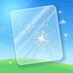
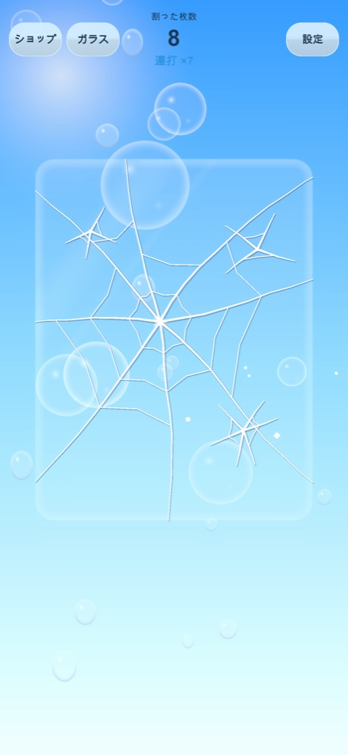

クリスタルクラッシュ
指でガラスを割る、iPhone の ASMR ゲーム。
遊び方
ノーマルガラスを左寄りからタップしてみてください。最初に触れたところからヒビが広がり、8回目でその形に沿って砕けます。次の一枚は、右寄りから。
音と振動
設定から、割れる音、環境音、振動の強さをそれぞれ調整できます。
About the game in English
A glass-shattering ASMR game for iPhone. Tap the Normal pane eight times. The main cracks spread from the spot you first touch and shape the pieces as the glass breaks. Sound and haptics can be adjusted in Settings.
